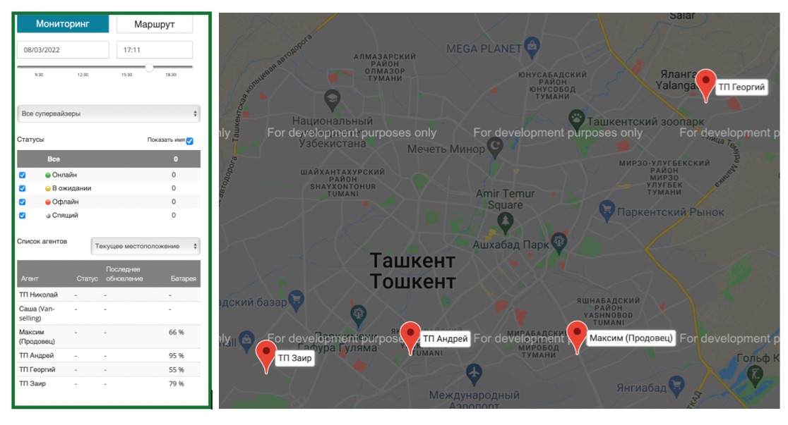

Как организовать контроль торговых представителей
Знакомьтесь, это Иван. Он работает торговым представителем, за день он объезжает 10 торговых точек, он проверяет остатки на складе, условия хранения товара и внимательно следит за тем, чтобы его 50 сантиметров на полке не занимали другие бренды.
Иван постоянно мониторит конкурентов, общается и анкетирует продавцов. Он работает над заключением новых договоров с магазинами. Каждый месяц по его зоне продажи растут на 10%.
Именно так выглядит идеальный торговый представитель.
А как поступают остальные? Остальные утопают в бумажках, “посещают” торговые точки из дома и тормозят продажи.
Как улучшить контроль над торговыми представителями?
В эпоху цифровой экономики первое что мы можем сделать для своего бизнеса - убрать бумажную волокиту. Второе - автоматизировать бизнес-процессы. Третье - настроить правильный аудит.
Именно аудит стал самым популярным способом контроля торговых представителей.
По факту он состоит из двух ключевых моментов:
- Менеджер анализирует работу торговой представителя после того, как он завершил все визиты. Проверяет отчеты, анкеты и опросники. С помощью Sales Doctor вы можете это делать в режиме real-time, внутри самого сервиса, без бумаги и личной коммуникации.
- Менеджер использует GPS-контроль перемещений торговых представителей и получает полную информацию о местоположении сотрудника и отчет о проделанной работе. Sales Doctor также предоставляет возможность отслеживания перемещений с помощью GPS-мониторинга.
Используя эти две техники аудита вы сможете превратить любого торгового представителя в того самого “идеального Ивана”)
Расскажем немного подробнее о том, как работает GPS-мониторинг в Sales Doctor.
Наглядная карта позволяет контролировать местоположение всех выездных сотрудников в режиме реального времени. Вы можете в любой момент проверить находится ли ваш сотрудник на торговой точке. Это реализовано благодаря GPS-трекеру в мобильном приложении Sales Doctor.
В меню управления вы можете получить всю необходимую информацию о статусе каждого сотрудника, последнем обновлении, заряде батареи. Вы можете отслеживать перемещения всей выездной команды и анализировать их маршрут (торговые представители, супервайзеры, мерчендайзеры, доставщики).
Как организовать работу торговой команды с помощью GPS-мониторинга?
Совместная работа - наиболее эффективный способ для управления торговыми представителями. В зарубежной практике это называется on-the-job training, то есть - обучение на рабочем месте.
Новый торговый представитель на первых порах работает как ваш личный помощник: выполняет поручения, таким образом получая новые знания. А вы, в свою очередь, отслеживаете его перемещения, направляете и контролируете его работу.